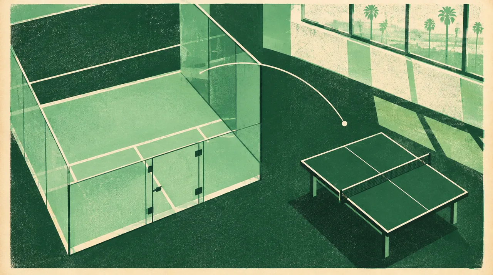

SPORT · JUL 15 / 17 / 18 · 2028 · Los Angeles
LA28 · WITH FOSTER
The games are new. The friendship is the throughline.
New games. The same beautiful friendship.
661days out
- When
- Jul 15 to Jul 18, 2028
- Where
- Squash + table tennis, Los Angeles · Directions
- Light
- A daylight chapter
- Squash
- July 15 to 24, 2028, Universal Studios, Universal City.
- Table tennis
- July 15 to 29, 2028, LA Convention Center Hall 3.
- Sources
- Squash at LA28 · ITTF schedule
Notes to the crew
Dig into the sound and story
3 short chapters. Open the ones that call to you.
THE FIRSTAn Olympic beginning of its own.
LA28 marks squash’s Olympic debut. A sport familiar to its players becomes a new part of the Games, which makes these sessions a chance to see a first chapter being written.
WATCH THE RALLYA small ball changes the whole room.
The game is a conversation with four walls: return the ball before its second bounce. Games are played to 11, with a two-point margin, in best-of-five matches. Look past the speed to the anticipation and space each player creates.
OUR CHAPTERJuly 18 already has a meaning.
Foster and I have three booked sessions of squash and table tennis in the plan. The second squash date, July 18, is his birthday. A date far ahead can still feel close when you know who you want beside you.
Before we go
Artist recordings open on their own players. Not a promised setlist.
Same crew, other nights
Swipe the picture, or use the arrow keys, for the next night.